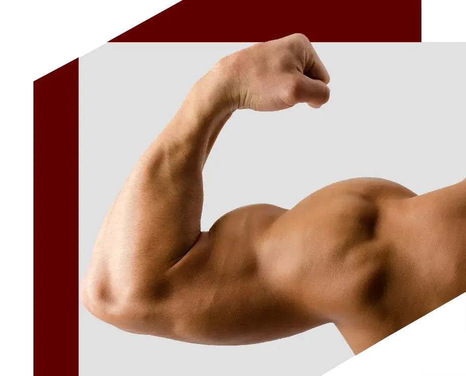
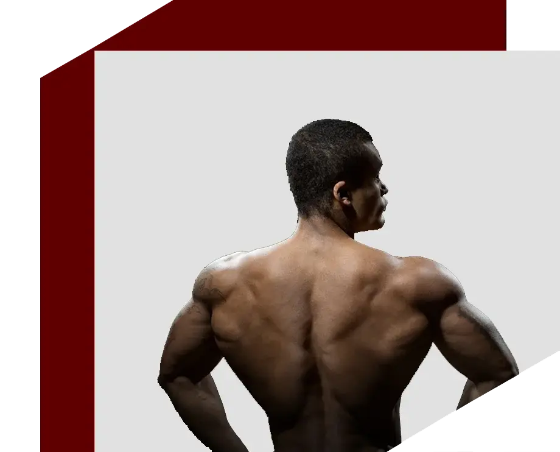
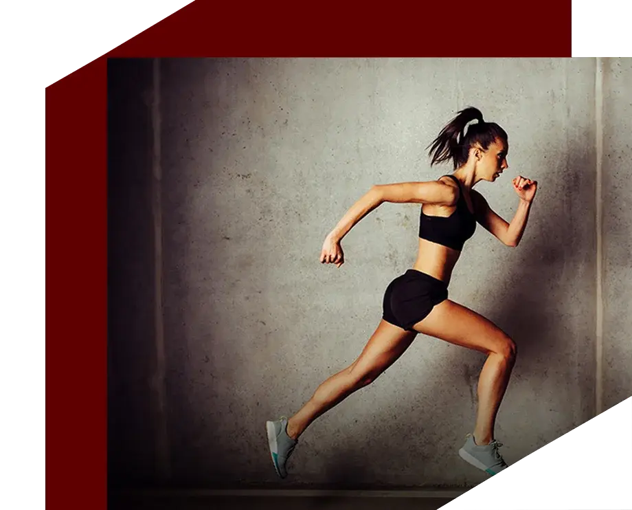
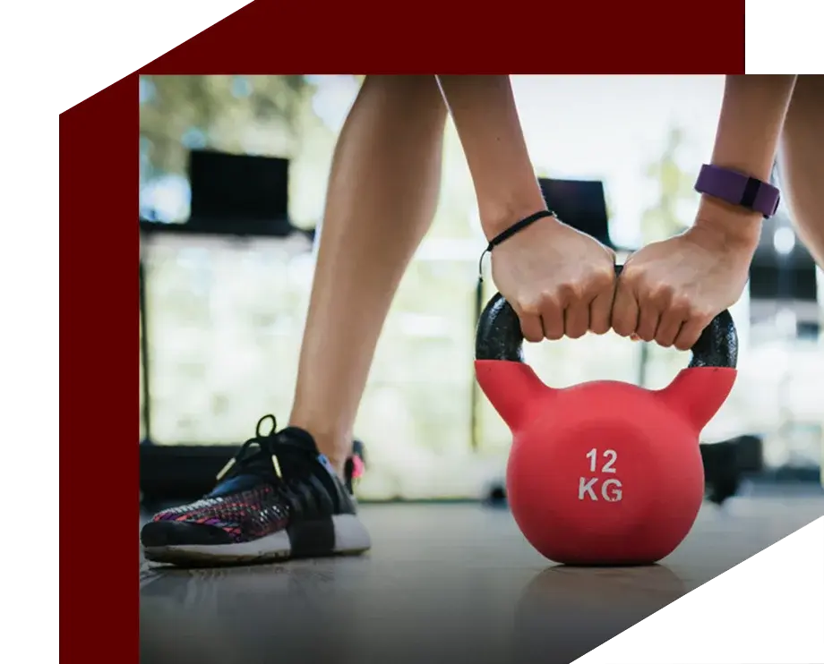
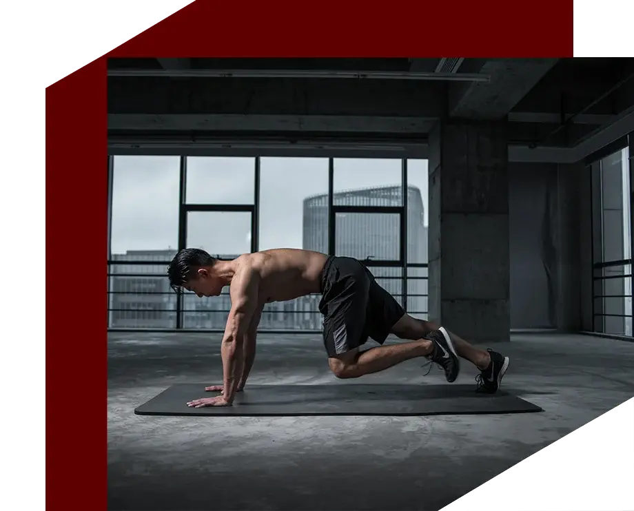

FAT KA DUSHMAN
Vinod Channa always makes it clear evidently about how one can improve and achieve
desired body
types only when one starts fighting with their fats and concentrate on increasing their muscle
volume.
EFFECTIVENESS MATTERS
There are various techniques and options these days to start with traditional
exercises to achieve fitness results. However, these may be too time consuming or monotonous to
exhaust you with little energy or enthusiasm to continue and achieve desired results. Vinod Channa’s
personalized approach in overcoming the pain areas and weak spots in timely manner brings about
desired effectiveness.


RESULT-ORIENTED
Under improper or no guidance, an individual can continue to do same form of
exercise in his or her comfort zone for long time with little results and might get discouraged.
Vinod Channa’s strict opposition to such inadequate way of exercise and intense focus on proper
techniques helps one attain their desired body types/target with less time and more enthusiasm.
For Examples, a guy/girl can continue with 10-15 pull ups for a period of 1 year
with comparatively low improvement in his/her strength while Vinod Channa’s variety of pull-up
methods for example doing single hand pull ups with the same count in a safe way involving the core
helps a guy/girl realize his/her core strength and work towards perfection and achieve outstanding
results does not matter what his/ her age is.
EXACT SCIENCE
Vinod Channa believes in scientifically sound method of improving one’s body type.
He studies each individual body and classify them properly into Mesomorph, Ectomorph and Endomorph
and then assigning them diet and exercise regimen that best suits their body needs. For example,
there is no point in keeping an ectomorph on carb-less diet with equal amount of workout as compared
to an Endomorph.

CHANGING THE MINDSET
Under improper or no guidance, an individual can continue to do same form of
exercise in his or her comfort zone for long time with little results and might get discouraged.
Vinod Channa’s strict opposition to such inadequate way of exercise and intense focus on proper
techniques helps one attain their desired body types/target with less time and more enthusiasm.
For Examples, a guy/girl can continue with 10-15 pull ups for a period of 1 year
with comparatively low improvement in his/her strength while Vinod Channa’s variety of pull-up
methods for example doing single hand pull ups with the same count in a safe way involving the core
helps a guy/girl realize his/her core strength and work towards perfection and achieve outstanding
results does not matter what his/ her age is.
STRENGTH LIES IN THE CORE
Vinod Channa clarifies that one should focus on their inner strength more often
rather than just aiming at achieving superficial body structure. One should derive satisfaction more
from increasing their core strength to workout rather than confining themselves to a particular form
of exercise or body type. For example, doing weight training for only biceps or triceps or certain
body parts without involving core workout of push-ups or plank. Vinod Channa’s constant focus on
strengthening one’s core while doing any workout is known to produce the best results as it
increases strength from within and has long term effect.
